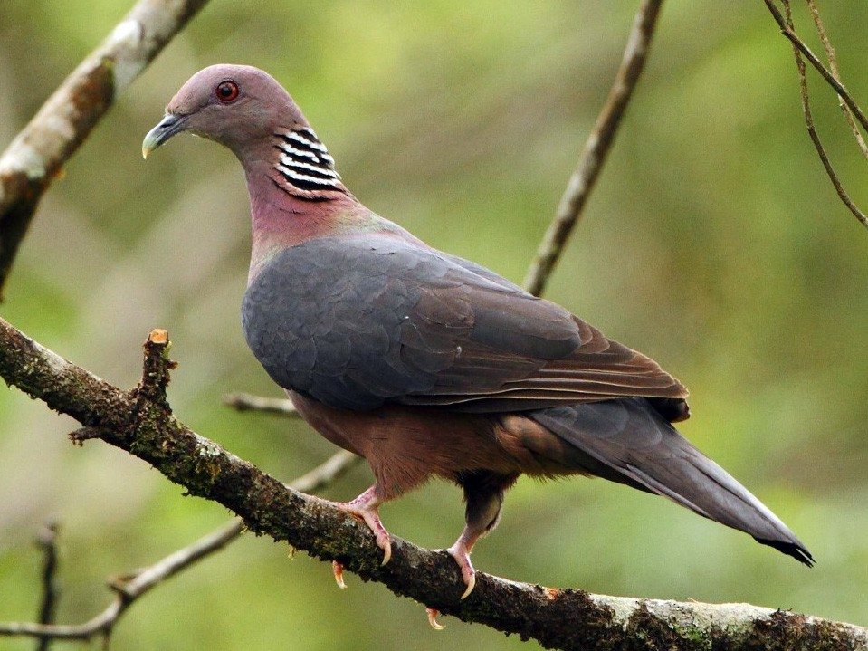

Sinharaja Forest Reserve.

Location: Southern Province
Description: Sinharaja is a spectacular wetland rainforest in Sri Lanka and a UNESCO World Heritage Site. Home to rare species such as the Sri Lankan leopard and purple langur, it is known for its unparalleled biodiversity. The dense canopy of a forest is home to native plants, allowing researchers to use the forest as a living laboratory. Crystal clear waterfalls and streams add to its charm. Guided tours highlight the importance of conservation by gaining insight into this ecological treasure.
Horton Plains National Park.
Location: Central Province, Sri Lanka
Description: UNESCO has designated Houghton Plain, a protected area in the Central Highlands, as a World Heritage Site. It is known for its unique ecosystem, including vast grasslands, misty valleys, and abundant wildlife. The park has breathtaking scenery, including the famous World's End Escarpment, and is home to the endangered Sambhar deer and purple langur. Explore the natural wonders of this plateau by exploring the well-maintained hiking trails.
Knuckles Mountain Range.
Location: Central and Matale Districts, Sri Lanka
Description: A striking landscape in central Sri Lanka is the Knuckles Mountains, a UNESCO World Heritage Site. It is rich in flora and fauna, and is known for its pristine topography and diverse ecosystem. Hiking trails in the mountains offer views of mist-shrouded valleys, roaring waterfalls, and expansive views. The Knuckles Range is a paradise for nature lovers and those seeking an intense mountain experience, known for its high biodiversity and unique topography.
| Location | Animals | Interesting Facts | Images |
|---|---|---|---|
| Sinharaja Forest Reserve | Purple-faced Langur | Endemic to Sri Lanka Recognized by its distinctive purple face Highly arboreal and social, living in groups |
 |
| Sri Lanka Blue Magpie | Endangered species Bright blue and chestnut plumage Known for its vocalizations |
 |
|
| Horton Plains National Park | Sambar Deer | Largest deer species in Sri Lanka Solitary herbivores with impressive antlers |
|
| Slender Loris | Nocturnal primates Large eyes and slow movements Endangered due to habitat loss |
 |
|
| Knuckles Mountain Range | Spotted Royal Frog | Endemic to Sri Lanka Characterized by distinctive spotted patterns on its skin |
|
| Sri Lanka Wood Pigeon | Endemic to Sri Lanka Recognized by its unique call and distinctive coloration This pigeon species stands out with its vibrant plumage, featuring deep purples and contrasting whites |
 | |
| Explore the rich biodiversity of Sri Lanka's wildlife in these diverse locations. | |||